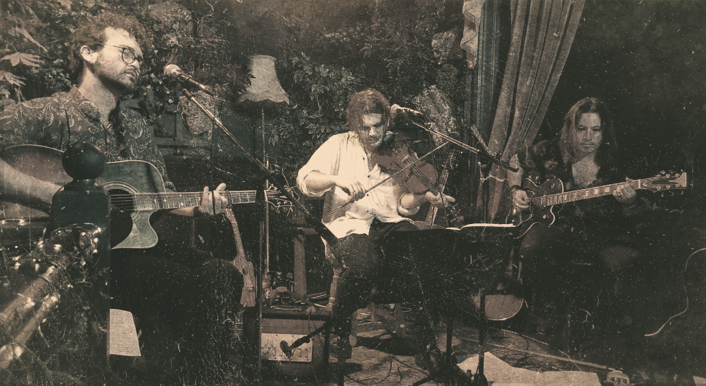

About
The Witchcraft and Vagrancy Act are a folk music collective based in Brighton, England. Combining experimental arrangements with traditional and original songs and tunes, The Witchcraft and Vagrancy Act seek to unearth the sinister side of folk music. Wailing fiddles and 3-part harmonies encounter aching drones and electric guitars in an exploration of historical music and the macabre. Expect tales of magic, murder and misery, as T.W.A.V.A. create their uniquely spooky interpretation of the folk canon.
Richard Craig is a musician and artist from Devon, England. A founding member of The Dillyboys and Hope Cove, Craig is a prominent figure in the Southwest folk scene, having performed with Phil Beer and Martin & Eliza Carthy, and appearing regularly at festivals across the UK, most notably Sidmouth Folk Week. Richard recently contributed a chapter to the upcoming Routledge Companion to Folk Horror, exploring the relationship between folk music and the horror genre. A multi-instrumentalist, Richard Craig plays violin, shruti box, banjo, ukulele, accordion and the jig doll.
George Gavin is an accomplished singer-songwriter from the south of England. Renowned for his heartfelt and innovative compositions, George is a staple in the Brighton folk scene. A founding member of the traditional Irish trio, The Falmer Flannellers, he also performs with Hope Cove and the Sussex Folk Music Society - bands both known for their rambunctious St Patrick's Day shows. George is avidly preparing his debut solo album, in which he experiments with physical tape loops and archaic technologies. George Gavin deftly performs on guitar, banjo, pennywhistle, keys and the bones.
Ioannis Zigras is a multi-instrumentalist from Kozani, Greece. An accomplished guitarist, Ioannis is a central member of Brighton's alternative music scene, notably performing in the bands Black Magic Mantra and Bastard Wing. Ioannis proffers an impressive mastery of stringed instruments and often deploys experimental tunings, crafting a style rooted in Greek and Balkan folk music, prog rock and electronica. Ioannis Zigras commands the acoustic guitar, electric guitar, 12-string guitar, bass, oud and baglama.